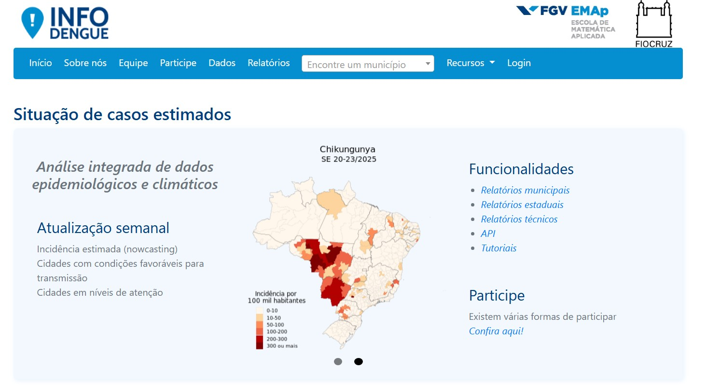
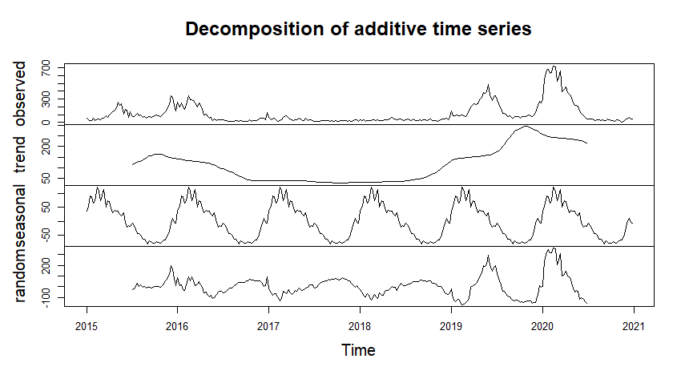

Análise dos Casos de Dengue no Município de Vitória no Periodo de 2015 a 2020
Trabalho Séries Temporais
Livia Ribeiro
Dengue no Brasil
A dengue é uma doença viral transmitida pelo Aedes aegypti e constitui um problema recorrente de saúde pública no Brasil. Por ser uma doença de notificação compulsória, seu registro é obrigatório, embora ainda haja subnotificação significativa. A análise de séries temporais, como a realizada neste trabalho com dados de 2015 a 2020, evidencia padrões importantes da doença. Bases de dados estruturadas são essenciais para apoiar a tomada de decisão por parte do governo e promover ações mais eficazes de prevenção e controle.
Base Utilizada
Para este trabalho foram utilizados dados obtidos no site InfoDengue.

Base Utilizada
A base é composta por 24 variáveis, porém foram utilizadas apenas:
data_iniSE: Primeiro dia da semana epidemiológica (Domingo);
SE: Semana Epidemiológica (201501, 201502,…);
casos: Número de casos notificados por semana.
Base Utilizada
Foram selecionados dados da primeira semana de 2015 até a última semana de 2020, totalizando 312 semanas observadas.
A princípio, não é possível identificar padrões claros de comportamento na série, devido à grande variação na escala entre os anos observados. Por exemplo, em 2018 o pico semanal foi de 69 casos, enquanto em 2020 ultrapassou os 700. Essa diferença compromete a visualização direta e dificulta a análise de tendências ou sazonalidades, por esse e outros motivos, existe a necessidade de aplicar técnicas de decomposição da série temporal.
Code
decomposicao1 <-decompose(serie_dengue1)
Code
plot(decomposicao1)
decompondo a série

tendência
Tendência
Code
plot(decomposicao1$trend)
Pode-se ver que a série não segue uma tendência única. O que podemos afirmar no geral, é que a tendência em questão é não linear. Sendo decrescente a partir do final de 2015, quase que estacionária a partir de 2017 e crescente a partir de 2018 com alguns picos em 2019 e 2020.
sazonalidade
sazonalidade
Code
plot(decomposicao1$seasonal)
A sazonalidade mostra um padrão recorrente anual, com aumento típico nos primeiros meses do ano, refletindo o comportamento cíclico da doença.
ruído aleatório
ruído aleatório
Code
plot(decomposicao1$random)
Observa-se picos grandes e variações irregulares, isso indica que nem toda a variação da série foi explicada pela tendência e sazonalidade.
teste dickey-fuller
No teste, \(H_0: \alpha=1\) (a série não é estacionária) e \(H_1: \alpha<1\) (a série é estacionária)
Porém o teste Dickey-Fuller simples não corrige autocorrelção nos resíduos, por isso foi realizado o teste Dickey-Fuller Aumentado.
dickey-fuller aumentado (adf)
O teste ADF expande a equação do teste Dickey-Fuller para incluir processos regressivos de alta ordem no modelo.
\[
y_t = c + \beta_t + \alpha y_{t-1} + \phi \Delta Y_{t-1} + e_t + \phi_2 \Delta Y_{t-2} ... \phi_p \Delta Y_{t-p}
\]\(H_0\) e \(H_1\) ainda são os mesmos, então se o p-valor for menor que o nível de significância, rejeita-se \(H_0\).
Code
adf.test(serie_dengue1)
Augmented Dickey-Fuller Test
data: serie_dengue1
Dickey-Fuller = -4.3603, Lag order = 6, p-value = 0.01
alternative hypothesis: stationary
O p-valor foi de 0.01, ou seja, a série já é estacionária (com 99% de confiança).
TESTE, TREINO E VALIDAÇÃO
Mesmo com o teste ADF rejeitando a hipótese da série não ser estacionária, apliquei a transformação por diferenciação pelo fato do ADF ser sensível a sazonalidades fortes (que é o caso da série em questão)
Code
serie_diff <-diff(serie_dengue1, lag =52)adf.test(serie_diff)
Augmented Dickey-Fuller Test
data: serie_diff
Dickey-Fuller = -4.4375, Lag order = 6, p-value = 0.01
alternative hypothesis: stationary
Code
treino <-window(serie_diff, end =c(2018, 52)) # até 2018validacao <-window(serie_diff, start =c(2019, 1), end =c(2019, 52)) # 2019teste <-window(serie_diff, start =c(2020, 1), end =c(2020, 52)) #2020
Os dois coeficientes (componente de média e componente sazonal) são estatisticamente significativos (erro padrão pequeno em relação ao valor estimado).
O modelo apresentou bom ajuste, com AIC = 1981.49 e resíduos com pouca autocorrelação, indicando que a estrutura temporal foi bem modelada.
sarima
SARIMA(0,1,1)(1,0,0)[52]
SARIMA(p, d, q)(P, D, Q)[s]
Observemos que foi aplicada uma diferenciação regular d=1, ou seja, a série não era estacionária em nível.
Porém, o teste ADF rejeitou a hipótese da série ser não estacionária. Isso acontece porque se a série tem forte padrão sazonal, o teste pode dizer que é estacionária, mas o auto.arima() vai detectar e diferenciar para estabilizar a média no tempo, e nesse caso considerou uma diferença (d=1) para melhorar a previsão.
sarima
Previsão um passo a frente.
Code
preds_sarima <-numeric(length(validacao))dados_treino <-ts(treino, frequency =52, start =c(2015, 1))for (i in1:length(validacao)) { mod <-auto.arima(dados_treino, seasonal =TRUE) preds_sarima[i] <-forecast(mod, h =1)$mean[1] dados_treino <-ts(c(as.numeric(dados_treino), validacao[i]), frequency =52,start =c(2015, 1))}
RMSE (SARIMA): 42.9
MAE (SARIMA): 30.95
MAPE (SARIMA): 0.26
prophet
Code
# Criando o data frame no formato esperado pelo Prophetdados_prophet <-data.frame(ds = semanaXcasos1$data_iniSE,y = semanaXcasos1$casos)treino_prophet <- dados_prophet[dados_prophet$ds <"2019-01-01", ]validacao_prophet <- dados_prophet[dados_prophet$ds >="2019-01-01", ]
Code
# modelo sem ajustemodelo_prophet <-prophet(changepoint.range =0.9,changepoint.prior.scale =0.5,seasonality.mode ='multiplicative',fit =FALSE)# sazonalidade anual personalizadamodelo_prophet <-add_seasonality( modelo_prophet,name ='anual',period =52,fourier.order =10)# ajustando o modelo com os dadosmodelo_prophet <-fit.prophet(modelo_prophet, dados_prophet)
prophet
Previsões
Code
futuro <-make_future_dataframe(modelo_prophet, periods =1, freq ="week")previsao_prophet <-predict(modelo_prophet, futuro)# visualizando a previsãoplot(modelo_prophet, previsao_prophet)
proephet
O modelo Prophet captura bem os padrões sazonais e as tendências gerais da série de dengue. A previsão de curto prazo parece ter uma boa aderência, mas ele acaba subestimando picos pontuais devido à suavização inerente do modelo. A área sombreada mostra a incerteza da previsão.
prophet
Previsão um passo a frente.
Code
preds_prophet <-numeric(length(validacao)) # prevendo para 1 passo à frente for (i in1:length(validacao)) { dados_treino <-rbind(treino_prophet, validacao_prophet[1:(i-1), ]) modelo_prophet <-prophet(dados_treino,daily.seasonality =FALSE, weekly.seasonality =TRUE, yearly.seasonality =TRUE) # Ajuste do modelo futuro <-make_future_dataframe(modelo_prophet, periods =1, freq ="week") previsao <-predict(modelo_prophet, futuro) preds_prophet[i] <-tail(previsao$yhat, 1) }
RMSE (Prophet): 109.66
MAE (Prophet): 95.36
MAPE (Prophet): 1.13
Comparação um passo
Métrica
Prophet
SARIMA
RMSE
109.66
42.9
MAE
95.36
30.95
MAPE
1.13%
0.26%
O SARIMA se saiu muito melhor em termos de todas as métricas (RMSE, MAE, MAPE). Isso sugere que, depois de estacionarizar a série temporal, o modelo SARIMA está conseguindo captar a estrutura da série temporal (tendência, sazonalidade) de forma mais eficiente que o Prophet.
previsão 4 passos
Previsão de 4 passos a frente (um mês).
Modelo
RMSE
MAE
MAPE (%)
SARIMA
74.27
71.84
93.44
Prophet
69.72
67.27
87.29
Os erros aumentaram drasticamente e tal acontecimento pode vir de diversos motivos:
O modelo acumula erros, o que geralmente aumenta a incerteza nas previsões de longo prazo.
Os modelos escolhidos realizam uma previsão mais conservadora, que não captura picos (que acabam ocorrendo nos casos de dengue).